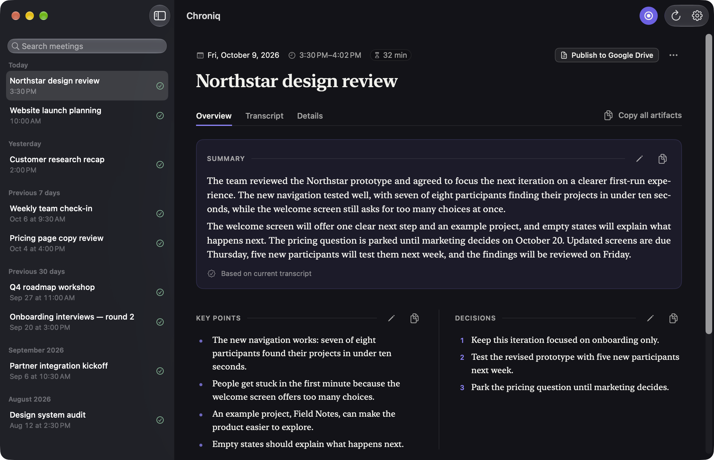
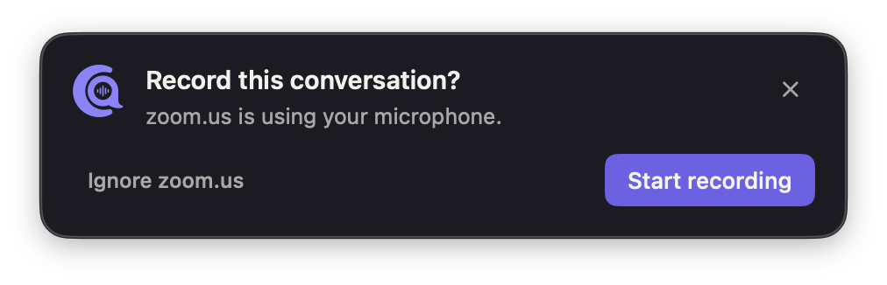
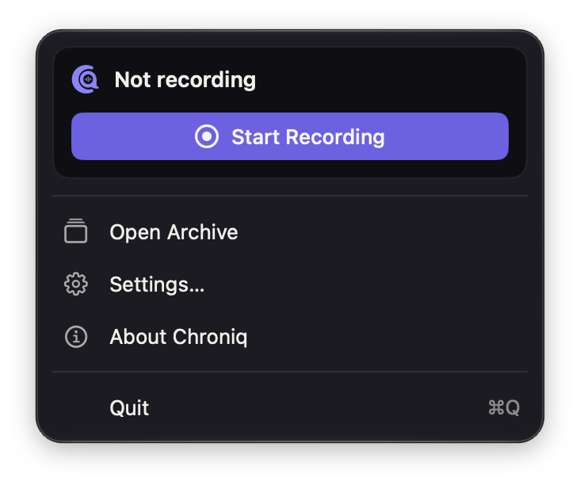
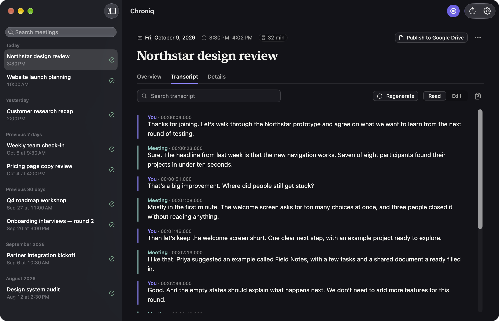
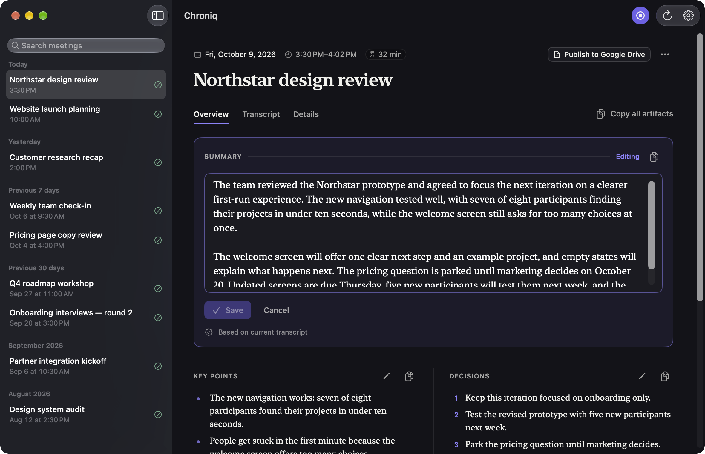
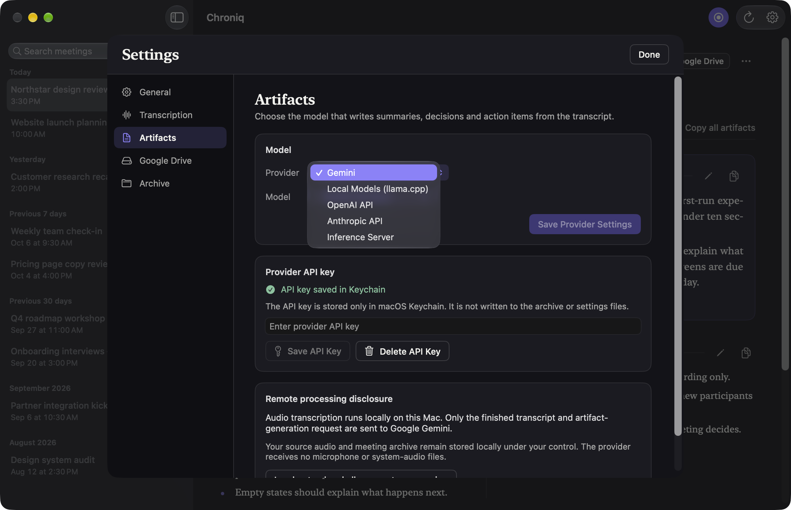
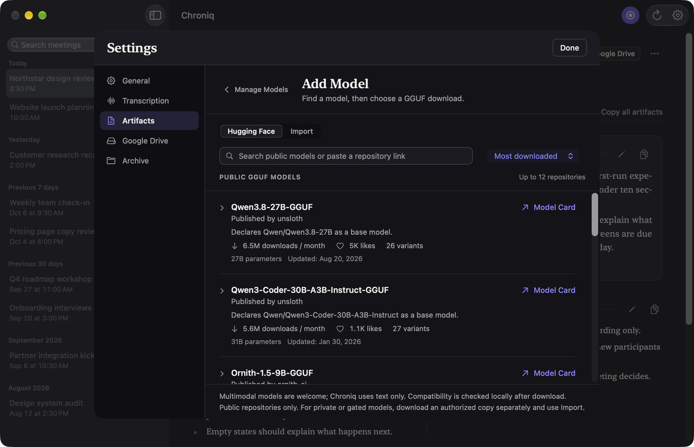

Record on purpose
Start from the toolbar, the menu bar or ⇧⌘R. Your microphone and the meeting audio are kept as two synchronized tracks and saved as lossless FLAC.
Meeting recorder for macOS
Chroniq records your voice and the meeting audio on your Mac, transcribes them locally, and turns the conversation into a summary, decisions and action items you can check against every word that was said.
macOS 15 or later · Apple silicon · Signed and notarized

Recording starts only when you choose
Transcription runs on your Mac
Plain files you can inspect
No account, no analytics
How it works
Start from the toolbar, the menu bar or ⇧⌘R. Your microphone and the meeting audio are kept as two synchronized tracks and saved as lossless FLAC.
Apple SpeechTranscriber follows the conversation live on macOS 26. NVIDIA Parakeet transcribes after the meeting on macOS 15. Audio never leaves your Mac.
A summary, key points, decisions, action items and source-linked facts, written by the model you choose and editable in place.
Recording reminders
Turn on reminders and Chroniq notices when another app — a call, a video meeting — starts using your microphone. A quiet panel offers to record. Nothing is captured until you click Start recording.


Transcript
You and Meeting stay distinct, with timestamps on every turn. Search the conversation, correct a word in place, and regenerate everything from the original audio whenever you want.

Outcomes
Every meeting gets a summary, key points, decisions and action items. Facts keep the exact quotes they come from, one click away in the transcript.

Models
Write outcomes with a model that runs on your Mac, or with the provider you already use. Chroniq keeps the same instructions, checks and source citations for all of them.
GGUF models through llama.cpp, in a sandboxed service with no network access. Find them on Hugging Face from inside Chroniq or import your own.
Gemini text models called directly from your Mac with your own API key.
The Responses API with your key. Requests are sent with response storage turned off.
Claude models through the Messages API, with your own key.
Any OpenAI-compatible endpoint with JSON Schema, on your Mac or your network. Chroniq tests the model before using it.
Remote providers receive the transcript text and generation instructions — never audio — and only after you acknowledge what will be sent. Keys stay in the macOS Keychain. Chroniq never switches from a local model to a remote one on its own.


Privacy
Transcription always runs locally. Meetings are stored as plain audio, text and JSON files in a folder you choose, readable without Chroniq.
Optional Google Docs publishing
Connect Google Drive, choose a folder and acknowledge what will be shared. Chroniq then keeps one document per meeting up to date, with outcomes, transcript and metadata in separate tabs.
Read how Google data is handled in the Privacy Policy and the Terms of Service.
The team reviewed the Northstar prototype and agreed to focus the next iteration on a clearer first-run experience, with updated screens on Thursday.
Built for trust
Recording survives interruptions and processing resumes after a restart, without losing finished work.
A missing setting or a provider error is shown with its cause and a single next step. Nothing starts behind your back.
Rewrite the outcomes from the current transcript, or rebuild everything from the original audio — always your choice.
Questions
A Mac with Apple silicon and macOS 15 or later. Live transcription with Apple SpeechTranscriber needs macOS 26 and the language assets you enable in Settings; NVIDIA Parakeet transcribes after recording on macOS 15 with a one-time model download.
Yes. Transcription is always local, and with a local GGUF model the outcomes are written on your Mac too, offline once the model is installed. Model downloads contact Hugging Face; Apple’s speech assets are managed by macOS.
Only the transcript text and the generation instructions, sent directly from your Mac with your own key after you acknowledge the disclosure. Never audio. Responses are checked before anything is saved.
No. When enabled, Chroniq checks once a second which apps are using a microphone input. It never opens an audio device or reads audio, and it records only after you click Start recording.
Edit the transcript and every outcome directly. Regenerate the outcomes from the current transcript, or everything from the two saved audio tracks. Regeneration replaces earlier edits only within the scope you confirm.
Open the DMG, drag Chroniq onto Applications and open it from there. The app and the disk image are signed and notarized by Apple.